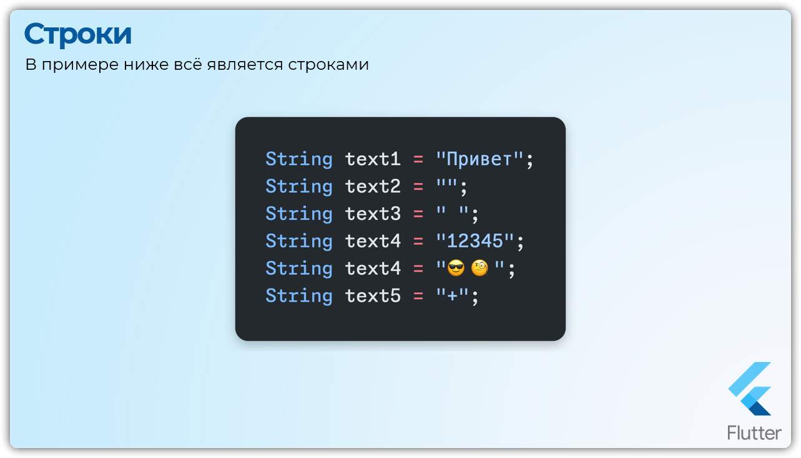
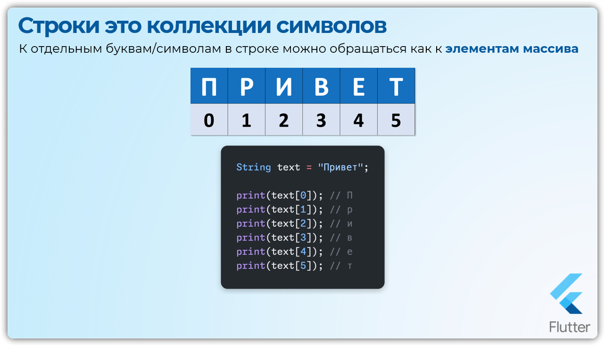
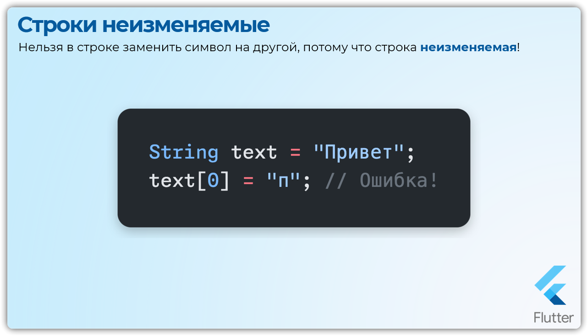

Урок 9: Строки String
Создание строк
Строка
Это последовательность символов заключенная в кавычки двойные или одинарные
Важно выбрать один стиль и придерживаться его во всем коде для повышения читаемости.
String str1 = "Обычная строка в вдойных кавычках";
String str2 = 'Обычная строка в одинарных кавычках';
Лучше выбрать один способ и использовать его постоянно.
Советую двойные кавычки.
Многострочные строки
Если нужно создать строку, которая занимает несколько строк в коде, используйте тройные кавычки:
String multStr = '''
Это многострочная строка,
которая продолжается на несколько строк.
Довольно удобно!
''';
Пустые строки
Все строки, включая пустые, считаются строками (тип данных String)
Все примеры ниже являются строками!
String text1 = "Привет";
String text2 = "";
String text3 = " ";
String text4 = "12345";
String text5 = "😎🧐"; // Строка может содержать эмодзи!

Повторение строк
Для повторения строки несколько раз используется оператор умножения:
print("Привет! " * 3); // Привет! Привет! Привет!
Конкатенация строк
Конкатенация
Это объединение нескольких строк в одну.
В Dart строки можно объединять с помощью оператора +
void main() {
String text1 = "Привет,";
String text2 = "Юля";
String result = text1 + text2;
print(result); // "Привет, Юля"
}
Интерполяция строк
Чтобы использовать данные из переменных внутри строки, эту строку нужно разбить на части и с помощью оператора + сделать конкатенацию.
Можно это сделать намного лучше и элегантней - шаблонные строки
Шаблонные строки - `интерполяция`
Интерполяция строк позволяет вставлять значения переменных и выражений прямо в строку.
Для этого используйте знак $ для одной переменной или ${} для сложного выражения.
void main() {
int countMessage = 10;
print("У вас " + countMessage.toString() + "сообщений" );
// Использование интерполяции
print("У вас $countMessage сообщений");
// У вас 10 сообщений
// Если выполняется более сложное выражение
// Нужно обернуть его в { }
print("У вас ${countMessage + 1} сообщений");
// У вас 11 сообщений
}
Экранирование символов
Если в строках нужно использовать специальные символы, такие как кавычки, символы новой строки, табуляции и т.д., используйте escape-последовательности.
void main() {
print("'H' первая буква строки \"Hello world!\"");
print("Первая строка \nВторая строка");
}
// 'H' - первая буква строки "Hello world!"
// Первая строка
// Вторая строка
Вот некоторые распространенные `escape-последовательности`
\n → новая строка
\t → табуляция
\' → одинарная кавычка
\" → двойная кавычка
Работа с отдельными символами строки
Коллекция символов
Строки в Dart — это последовательности символов, и вы можете обращаться к отдельным символам строки через индексы, как в массиве.

String text = "Привет";
print(text[0]); // П
print(text[1]); // р
print(text[2]); // и
print(text[3]); // в
print(text[4]); // е
print(text[5]); // т
Ограничения - Строки неизменяемые
Все строки `неизменяемые` (`immutable`)
Строки в Dart — неизменяемые. Вы не можете изменить отдельный символ строки!

String text = "Привет";
text[0] = "п"; // Ошибка!
Методы работы со строками
Проверка длины строки и пустоты
Вы можете проверить длину строки с помощью свойства length и проверить, пуста ли строка, с помощью isEmpty
String s = "Hello, Dart!";
print(s.length); // 13
print(s.isEmpty); // false
// Cтрока состоящая из пробелов не считается пустой!
print(''.isEmpty); // true
print(' '.isEmpty); // false
Преобразование регистра
Вы можете преобразовать строку в верхний или нижний регистр
String s = "Hello, Dart!";
print(s.toUpperCase()); // HELLO, DART!
print(s.toLowerCase()); // hello, dart!
Удаление пробелов
Для удаления пробелов по краям строки - методы trim(), trimLeft(), trimRight()
String s = " Hello, Dart! ";
print(s.trim()); // "Hello, Dart!"
print(s.trimLeft()); // "Hello, Dart! "
print(s.trimRight()); // " Hello, Dart!"
Извлечение подстроки
Используйте метод substring() для извлечения части строки
String s = "Hello, Dart!";
print(s.substring(0, 5)); // Hello
Поиск в строке
Используйте методы для поиска внутри строки contains() startsWith() endsWith()
var name = 'IT-Квантум';
// Содержит ли строка другую строку
print(name.contains('Квантум')); // true
// Начинается ли строка с другой строки
print(name.startsWith('IT')); // true
// Заканчивается ли строка другой строкой
print(name.endsWith('ум')); // true
// Найти положение(индекс) строки в другой строке
print(name.indexOf('Ква')); // 3
Разделение строки
Метод split() разделяет строку на подстроки с помощью разделителя в скобках
String s = "Hello Dart";
List parts = s.split(" ");
print(parts.lenght); // 2
print(parts); // ["Hello", "Dart"]
Замена подстроки
Метод replaceAll() позволяет заменить все вхождения подстроки:
String s = "Hello Dart";
String result = s.replaceAll("Dart", "Flutter");
print(result); // Hello Flutter
Преобразование строки в число
Используйте методы int.parse() и double.parse() для преобразования строк в числа:
int digit = int.parse("42");
double ddigit = double.parse("3.14");
print(digit); // 42
print(ddigit); // 3.14
Для безопасного преобразования используйте tryParse():
int? digit = int.tryParse('abc');
print(digit); // null
Преобразование числа в строку
Методы toString() и toStringAsFixed() используются для преобразования чисел обратно в строки
int num = 42;
double pi = 3.14159;
print(num.toString()); // "42"
print(pi.toStringAsFixed(2)); // "3.14"
Дополнительно
Использование StringBuffer
Конкатенация строк через `StringBuffer`
Создать объект StringBuffer, методом write добавить отдельные строки.
Результат - приведение к строке методом toString, который объединит всё в одну строку. Это удобный и эффективный способ, если входных строк очень много.
StringBuffer - Класс для эффективного объединения строк.
List strings = ['a', 'b', 'c', 'd', 'e', 'f', 'g'];
StringBuffer buffer = StringBuffer();
buffer
..write('!')
..writeAll(strings)
..write('.');
var fullString = buffer.toString();
print('StringBuffer: $fullString');
Регулярные выражения
// * Задать правило для регулярного выражения через класс RegExp()
// * Найти и выбрать все цифровые значения в строке
var numbers = RegExp(r'\d+');
var allCharacters = 'Dart & Flutter';
var someDigits = 'Dart 2.15 & Flutter 2.6.0';
// ? Содержит ли строка цифры
print(allCharacters.contains(numbers)); // false
print(someDigits.contains(numbers)); // true
// ? Заменить каждое совпадение в строке
var exedOut = someDigits.replaceAll(numbers, 'XX');
print(exedOut); // Dart XX.XX.XX & Flutter XX.XX.XX
// * Также можно работать непосредсвенно с классом RegExp()
// hasMatch - когда регулярка имеет совпадение в строке
print(numbers.hasMatch(someDigits)); // true
// Показать все совпадения
for (var match in numbers.allMatches(someDigits)) {
print(match.group(0));
}
Символы и Руны
// ! Строка представлена последовательностью единиц кода Unicode UTF-16, доступной через элементы codeUnitAt или codeUnits:
string = 'Dart';
print(string.codeUnitAt(0)); // 68
print(string.codeUnits); // [68, 97, 114, 116]
// ! Строковое представление единиц кода доступно через оператор индекса:
string[0]; // D
// ! Символы строки (characters of a string) кодируются в UTF-16. Декодирование UTF-16, которое объединяет пары, возвращает код в Unicode.
// Следуя терминологии, аналогичной в языке Go, мы используем имя «руна» rune для целого числа, представляющего кодовую точку Unicode. Используйте свойство runes, чтобы получить руны строки:
(string.runes.toList()); // [68, 97, 114, 116]
// ! Чтобы не мучаться с парой возвращаемых значений для символов, руны объединяют эту пару и возвращают одно целое число. Например, символ Unicode для музыкального G-ключа ('𝄞') со значением руны 0x1D11E состоит из пары UTF-16: 0xD834 и 0xDD1E. Использование codeUnits возвращает пару, а использование рун возвращает их объединенное значение:
// var clef = '\u{1D11E}';
var clef = '𝄞';
var pumpkin = '🎃';
print(clef.codeUnits); // [55348, 56606] Hex: [0xD834, 0xDD1E]
print(clef.runes.toList()); // [119070] Hex: [0x1D11E]
print(pumpkin);
print(pumpkin.codeUnits);
// ! И ещё для более удобной работы и ожидаемого поведения, рекомендуется использовать официальный пакет characters 1.2.0 (на основе этих рун)
// https://pub.dev/packages/characters
// ? Например, есть строка c эмоодзи.
// Если обратиться к последнему символу, то будет ерунда
// Для нормального поведения нужно использовать characters
var iLovePumpkin = 'I Love Pumpkin 🎃';
print(iLovePumpkin);
print('ТЫКОВКА: ${iLovePumpkin.substring(iLovePumpkin.length-1)}');
print('ТЫКОВКА: ${iLovePumpkin.characters.last}');
// Можно это проследить по размеру строки, она отличается 17 вместо 16
print(iLovePumpkin.length);
print(iLovePumpkin.characters.length);
// ! Так же в дарте есть ещё один тип похожий строки это Symbols, он нужен для постоянной идентификации объекта (исп. обычно в API, чтобы при модификации значений, символы никогда не изменятся)
// Но использовать их мы не будем практически никогда, в этом курсе точно.
//* #id
//* #symbols